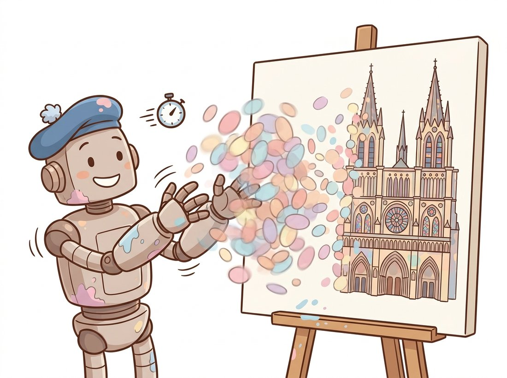

"NeRF asked a neural network a million questions to paint one frame. I just throw a few million colored marshmallows at the screen and let them blur into a photograph. Crude? Perhaps. But I render before you finish blinking."
A Cloud of Translucent Blobs That Insists It Is a Cathedral
3D Gaussian splatting represents a scene as millions of small, colored, oriented translucent blobs and renders an image by projecting each blob onto the screen and alpha-blending them, a process so simple that a GPU can rasterize it at hundreds of frames per second. Where NeRF asked a network about every point along every ray, splatting stores the scene explicitly as a set of 3D Gaussians, each carrying a position, a shape, a color, and an opacity, and optimizes those parameters directly against the photographs. It keeps NeRF's photorealism and differentiable training while discarding the per-ray network query that made NeRF slow. This section explains what a 3D Gaussian is and why it is the right primitive, how splatting renders and trains, the adaptive densification that grows detail where it is needed, and why this point-based representation overtook NeRF for many tasks within a year of its 2023 debut.
Section 27.4 ended on NeRF's central weakness: photorealistic, but slow, because every pixel costs dozens of network evaluations. The 2023 paper of Kerbl and colleagues found a way to keep the quality and the differentiable training while replacing the implicit network with an explicit, renderable structure. In a sense, splatting is the colored point cloud of Section 27.2 made differentiable, given shape and opacity, and rasterized rather than ray-marched. It is worth seeing how the same view-synthesis problem yields such a different solution.
1. The Primitive: An Anisotropic 3D Gaussian Beginner
The scene is a collection of 3D Gaussians. Each one is a soft, ellipsoidal blob of color described by a small set of optimizable parameters: a center $\mu \in \mathbb{R}^3$ (where it sits), a covariance $\Sigma$ (its size and orientation, so it can be a sphere or a stretched ellipsoid), an opacity $\alpha$ (how solid it is), and a color, stored as spherical-harmonic coefficients so the color can vary with viewing direction (the same view-dependence NeRF achieved with the direction input). Spherical harmonics are simply a set of basis functions defined over directions, the angular equivalent of a Fourier series on a sphere; storing a few coefficients per Gaussian lets its color change smoothly as the view angle changes, rather than fixing one flat color. The density of one Gaussian at a point $x$ is
The quadratic form $(x - \mu)^\top \Sigma^{-1} (x - \mu)$ is just a stretched, rotated distance from the center: it grows slowly along the blob's long axis and quickly across its thin axis, so $G(x)$ falls off to a soft edge shaped like an ellipsoid rather than a round ball. A spherical Gaussian would be a fuzzy ball; the anisotropic covariance lets each blob stretch along a surface, so a flat wall can be tiled by a few wide, thin ellipsoids rather than many round ones.
One detail makes the covariance trainable. The optimizer cannot adjust the entries of $\Sigma$ directly, because a freely changing matrix could drift to something that is not a valid covariance (the soft edge would stop being a sensible ellipsoid). The fix is to store $\Sigma$ in factored form, $\Sigma = R S S^\top R^\top$, with a rotation $R$ and a diagonal scale $S$, so the optimizer adjusts an orientation and three axis lengths instead of a raw matrix. The rotation $R$ is stored as a quaternion, the compact four-number encoding of a 3D rotation used for camera poses in Section 14.5. A scene needs on the order of one to several million such Gaussians.
2. Rendering by Splatting: Project, Sort, Blend Intermediate
Rendering does not march rays. Instead, each 3D Gaussian is projected ("splatted") onto the image plane, where it becomes a 2D Gaussian footprint, a soft ellipse, using the same camera projection of Chapter 12. The Gaussians are sorted by depth, and for each pixel the overlapping splats are blended front to back with exactly the alpha-compositing equation you met in NeRF:
where $\alpha_i$ is the projected Gaussian's opacity at that pixel (its stored opacity times its 2D footprint value) and $c_i$ is its color. This is the discrete volume rendering of Section 27.4 with the integral replaced by a sorted sum over splats, and it is the operation GPUs are built to do fast. Figure 27.5.1 contrasts the two rendering models. Because projection, sorting, and blending are all differentiable, the photometric loss flows back into every Gaussian's position, shape, color, and opacity, and the whole cloud is optimized by gradient descent just like a NeRF, but with no network in the inner loop.
NeRF and splatting solve an identical optimization problem, minimize the photometric error between rendered and observed pixels over a set of posed images, with an identical rendering principle, front-to-back alpha compositing. They differ only in what is optimized: NeRF optimizes the weights of a network that is queried per point; splatting optimizes the explicit parameters of a few million Gaussians that are projected and blended. The lesson is that the representation and the renderer are separable design choices, and choosing an explicit, rasterizable primitive over an implicit, ray-queried one trades a little memory for one to two orders of magnitude in rendering speed. This is the recurring "differentiable forward model" recipe from Section 27.4 applied to rasterization instead of ray marching.
Seurat spent two years dabbing tiny dots onto one canvas so that, from across the room, they fused into a Sunday afternoon. Gaussian splatting does the same thing with a few million translucent ellipsoids, except it dabs them all at once, sixty times a second, and lets gradient descent pick the colors. Stand too close and the cathedral dissolves into a haze of fuzzy marshmallows; step back and it snaps into a photograph. The whole representation is a bet that, given enough blobs, blur is just detail you have not stepped far enough away from. The illustration below shows the blobs fusing into a picture as your eye travels across the canvas.

3. Adaptive Densification: Growing Detail Where It Is Needed Advanced
A fixed set of Gaussians cannot represent a scene well everywhere: smooth regions need few, intricate regions need many, and you do not know the right distribution in advance. Splatting solves this with adaptive density control interleaved with optimization. Initialized from the sparse point cloud that COLMAP produces (the same structure-from-motion output NeRF consumed, from Chapter 14), the optimizer periodically inspects the gradients. Gaussians with large position gradients sit in under-reconstructed, high-detail regions and are densified: small ones are cloned to add coverage, large ones are split into two smaller ones to add resolution. Gaussians whose opacity has decayed near zero are pruned. Over training the cloud grows from the sparse COLMAP seed (often a few thousand points) to millions of well-placed Gaussians, concentrating capacity exactly where the photographs demand it. The pseudocode below sketches the optimization loop with this density control.
# Gaussian-splatting optimization: a differentiable rasterizer (not a network)
# renders the explicit Gaussians, the photometric loss flows back into every
# Gaussian, and periodic densify/prune steps grow detail where it is needed.
def train_gaussian_splat(gaussians, cameras, images, iters=30000):
"""Optimize explicit Gaussians against posed images with adaptive densification."""
optim = make_optimizer(gaussians) # per-attribute learning rates (pos, scale, color...)
for step in range(iters):
cam, target = sample_view(cameras, images)
rendered = rasterize(gaussians, cam) # project + sort + alpha-blend (subsection 2)
loss = l1(rendered, target) + ssim_term(rendered, target) # photometric loss
loss.backward()
if step % 100 == 0 and step < 15000:
densify(gaussians, grad_threshold=2e-4) # clone/split high-gradient Gaussians
prune(gaussians, min_opacity=0.005) # remove near-transparent Gaussians
optim.step(); optim.zero_grad()
return gaussians # a few million optimized 3D Gaussians, render-ready in real timedensify and prune calls grow Gaussians in under-reconstructed regions and delete transparent ones, so the model allocates capacity adaptively rather than using a fixed grid.The training objective is a blend of an L1 pixel loss and a structural-similarity (SSIM) term, the same SSIM metric introduced back in Chapter 1 for measuring image quality, here repurposed as a training loss because it captures perceptual structure better than pixel error alone.
Because a splat is "explicit" and looks photorealistic, it is easy to assume the millions of Gaussian centers $\mu$ form a faithful 3D scan you could treat like the sensor point cloud of Section 27.2. They do not. The loss optimizes only the rendered image, exactly the photometric objective NeRF uses, so a Gaussian is rewarded for producing the right pixels, not for sitting on the true surface. The optimizer freely floats blobs slightly off the geometry, stacks several translucent Gaussians to fake one opaque surface, and leaves the centers noisy or hollow where view coverage was thin, precisely the inconsistent-capture failure of Section 27.6. This is why recovering a clean surface needs the dedicated mesh-extraction methods (SuGaR, 2D Gaussian Splatting) named in the research-frontier callout, not a raw dump of the centers. Real-time photorealistic rendering is not the same as accurate, metric, surface-aligned geometry.
Who: an augmented-reality team at a furniture retailer, 2024, letting customers scan their room and place virtual products inside a photorealistic reconstruction. Situation: their v1 used a NeRF backend; reconstructions looked great on a workstation. Problem: rendering the NeRF on a phone ran at two or three frames per second, far below the 30+ needed for a smooth AR experience, and the per-ray MLP query drained the battery and overheated the device. Decision: they migrated to 3D Gaussian splatting, training the splat in the cloud from the customer's scan and shipping the explicit Gaussian cloud to the phone, where a lightweight rasterizer renders it. Result: the same scan now rendered at 60 frames per second on mid-range phones, with comparable visual quality, because rasterizing explicit Gaussians is something mobile GPUs already do well. Lesson: when real-time rendering on constrained hardware is the requirement, the explicit, rasterizable representation wins decisively over the implicit one; the choice of scene representation is also a deployment decision, which is exactly the concern of Chapter 28.
The differentiable rasterizer, the spherical-harmonic color, the quaternion-scale covariance, and the densification schedule are all delicate to implement (the original release shipped a custom CUDA rasterizer). Nerfstudio's splatfacto wraps the whole method behind the same interface as its NeRF, so the only change from Section 27.4 is the model name:
# Shell, after ns-process-data has recovered poses (same as the NeRF flow):
# ns-train splatfacto --data ./my_capture
# Then export the optimized Gaussians to a standard .ply for use in a web/mobile viewer:
# ns-export gaussian-splat --load-config ./outputs/.../config.yml --output-dir ./splatnerfacto for splatfacto is the only change from the NeRF flow; the differentiable rasterizer, spherical-harmonic color, quaternion-scale covariance, and densification schedule are all wrapped, and ns-export writes the interchange .ply that web and game-engine viewers consume.This replaces hundreds of lines of CUDA and Python (rasterization, sorting, densification, spherical harmonics) and exports to the interchange .ply that browser viewers and game engines consume. The gsplat library underneath is the maintained, differentiable rasterizer the whole ecosystem now builds on.
Gaussian splatting moved faster than almost any recent vision idea. Dynamic splatting (4D Gaussian Splatting, Deformable 3DGS, 2024) adds a time dimension so the Gaussians move, capturing video and moving scenes, the spatiotemporal analogue of Chapter 26. Compression is active because a raw splat can be hundreds of megabytes; methods like Scaffold-GS, Compact-3DGS, and the 2024-2025 vector-quantized variants shrink scenes by 10 to 30 times for streaming. Mesh extraction (SuGaR, 2D Gaussian Splatting, 2024) recovers a clean triangle mesh from the splat, bridging back to the explicit surface of Section 27.2 for use in standard graphics pipelines. And generative splatting closes the loop with Part IV: models such as DreamGaussian and feed-forward large Gaussian reconstruction models like LGM (ECCV 2024 Oral, arXiv:2402.05054) predict a full splat from text or a single image in seconds, the representation behind much of the 3D generation in Chapter 36.
We now have two production-grade ways to turn photographs into a renderable 3D scene: the implicit radiance field of Section 27.4 and the explicit Gaussian splat of this section. Both, crucially, depend on camera poses, sensible captures, and careful cleanup, and both fail in ways that no paper figure shows. The final section steps back from the methods to the workflow that ties them together in practice. That is Section 27.6.
Write down the discrete volume rendering equation from Section 27.4 and the alpha-compositing equation from subsection 2 of this section side by side. Identify which terms correspond, the per-sample opacity versus the per-splat opacity, the transmittance product, the color sum, and explain in a short paragraph the single structural difference: NeRF integrates over ordered samples along one ray, splatting sums over depth-sorted projected Gaussians at one pixel. Why does the second formulation map so much better onto GPU rasterization hardware?
Using Nerfstudio's splatfacto on a capture of your own (or a provided dataset), train a Gaussian splat and export it to .ply. Load the .ply and report: the final number of Gaussians, the distribution of their scales (are most small or large?), and the opacity histogram. Then re-train with densification disabled (fix the Gaussian count to the initial COLMAP seed) and compare the rendered quality. Write two sentences explaining what densification bought you, referencing the high-detail regions of subsection 3.
A splat stores per Gaussian: position (3 floats), scale (3), rotation quaternion (4), opacity (1), and color as spherical harmonics of degree 3 (48 floats for RGB). Compute the memory for a 2-million-Gaussian scene at 4 bytes per float. Compare this to a NeRF MLP of roughly 1 million parameters. Then explain the apparent paradox: splatting uses far more memory yet renders far faster than NeRF. Connect your answer to the per-ray network query of Section 27.4 and to the deployment trade-off in the AR furniture story, and note one situation where NeRF's smaller footprint would still be preferable.